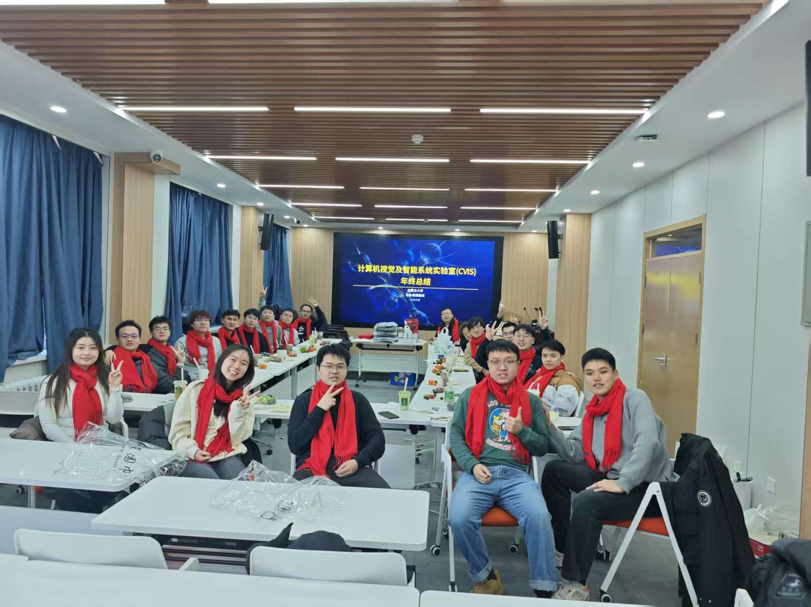
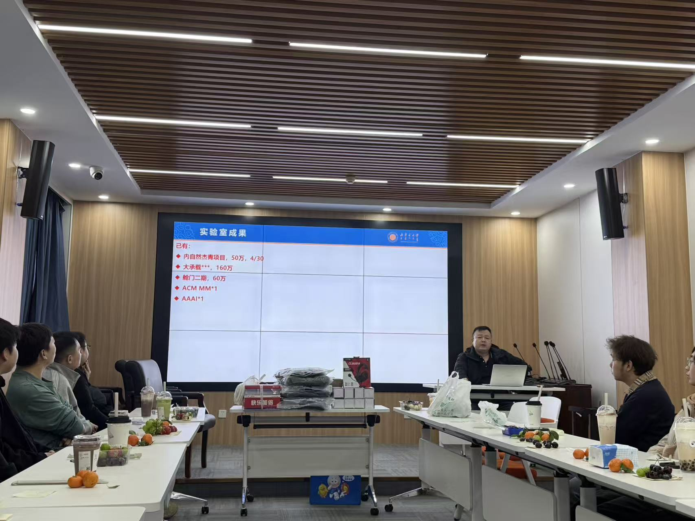
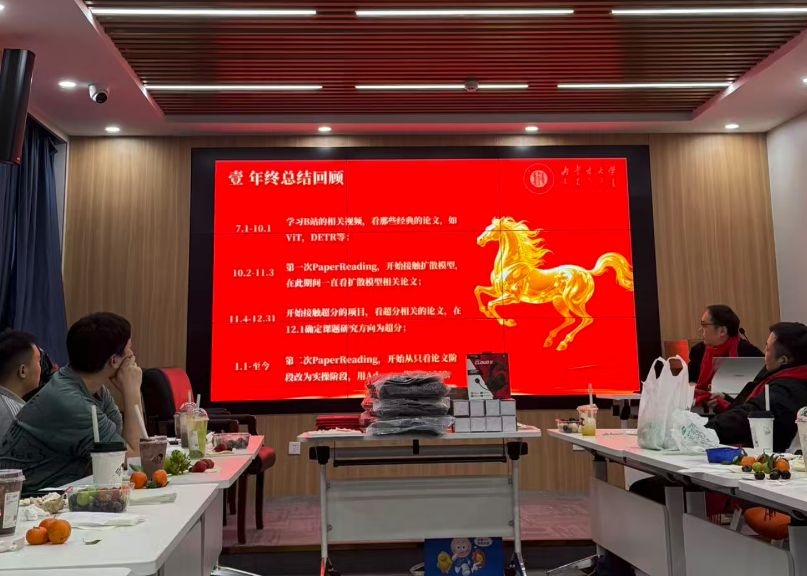
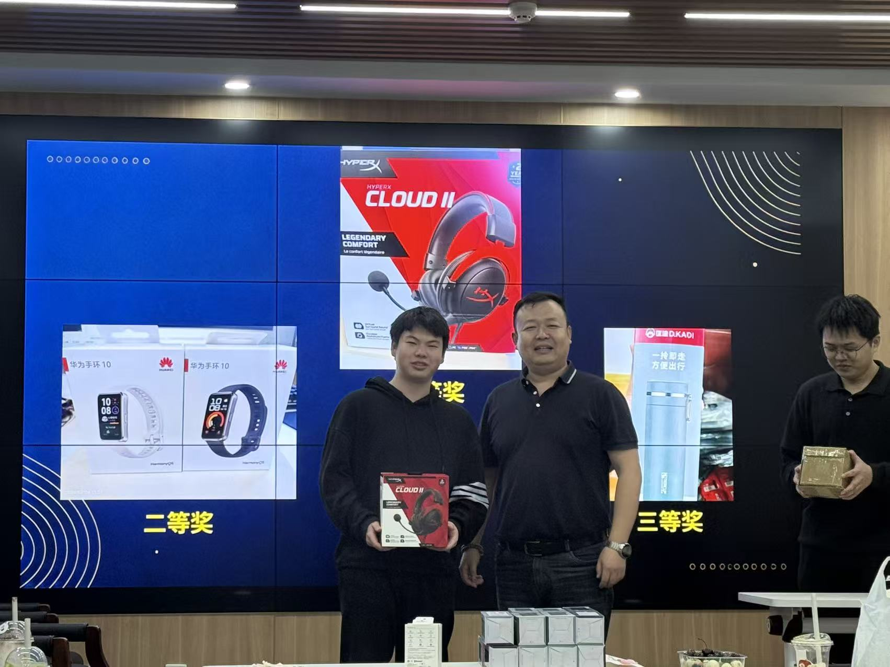
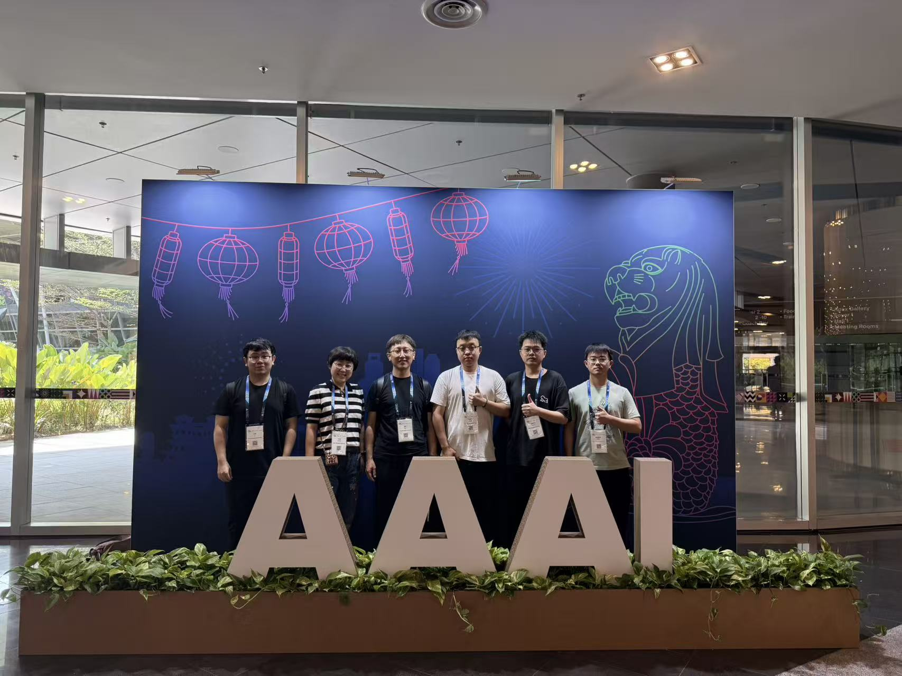

-
为总结过去一年的工作，展望新一年的目标，实验室于2026年2月4日举行了精彩的年会。本次年会由张永强老师总负责，课题组全体成员齐聚一堂，共同度过了一段愉快而难忘的时光。实验室年会收起活动时间：2026年02月04日
为总结过去一年的工作，展望新一年的目标，实验室于2026年2月4日举行了精彩的年会。本次年会由张永强老师总负责，课题组全体成员齐聚一堂，共同度过了一段愉快而难忘的时光。
总结汇报：回顾过往，蓄力新程
2月4日下午，课题组全体师生学院会议室，召开2025年度工作总结报告会。会上，课题组全体博士生、研究生依次上台，就过去一年在科研项目、学术论文、实验进展等方面的工作进行了系统梳理与汇报。汇报内容详实、思路清晰。
表彰先进：树立榜样，激励前进
2月4日下午，课题组举行了简单而隆重的年度表彰仪式。为鼓励在学术发展、项目完成、等方面作出突出贡献的成员。

趣味抽奖：
年会末尾组织了有趣激动的抽奖环节。
 -
AAAI人工智能会议（AAAI Conference on Artificial Intelligence）由国际先进人工智能协会主办，是人工智能领域的顶级国际学术会议之一。第40届AAAI人工智能会议（AAAI 2026）将于2026年1月20日至1月27日在新加坡Expo召开。 24级博士生梁秋雨参会并汇报了工作。CVIS实验室参会AAAI 2026收起参会时间：2026年1月20日—27日
AAAI人工智能会议（AAAI Conference on Artificial Intelligence）由国际先进人工智能协会主办，是人工智能领域的顶级国际学术会议之一。第40届AAAI人工智能会议（AAAI 2026）将于2026年1月20日至1月27日在新加坡Expo召开。24级博士生梁秋雨参会并汇报了工作。
在本次 AAAI 中，梁秋雨汇报了工作：《Tensor Decomposition and Language Description for Open-Vocabulary Object Detection》。
Abstract: Open-vocabulary object detection (OVOD) aims to overcome the limitations of fixed-category settings by enabling the detection and recognition of unseen objects. Although existing approaches based on region–word alignment and knowledge distillation have achieved notable progress, their performance is still constrained by three major challenges: imprecise region–word alignment, redundant information transfer during knowledge distillation, and low-quality category embedding representations. To address these issues, this paper proposes a novel open-vocabulary object detection framework, termed TLDet, which integrates tensor decomposition with language descriptions. In conventional methods, the candidate box with the highest similarity score often focuses on highly discriminative yet locally incomplete regions (e.g., containing only the head of an object), leading to misalignment between visual regions and textual semantics. To mitigate this problem, we introduce a low-rank candidate box selection module. By applying singular value decomposition (SVD) to the feature matrix of each candidate box and computing the sum of its singular values, the structural completeness of the region is quantitatively measured. This enables the filtering of discriminative but incomplete regions, thereby significantly improving the alignment accuracy between visual regions and textual semantics. To avoid redundant information transfer in the knowledge distillation process, TLDet further incorporates a core tensor distillation strategy. Based on Tucker decomposition, the feature representations of both teacher and student models are decomposed into core tensors. By aligning and optimizing these core tensors, the proposed method achieves efficient and selective knowledge transfer, allowing the student model to focus on the most critical feature representations learned by the teacher model. Furthermore, to enhance the representational capacity of category semantic embeddings, we design a language description enhancement mechanism. During inference, semantic knowledge from a large language model (LLM) is incorporated to generate rich category descriptions. This approach compensates for semantic deficiencies in long-tail and ambiguous categories commonly encountered in open-vocabulary scenarios, thereby improving the discriminability and generalization ability of category embeddings. Extensive experiments on the COCO and LVIS benchmark datasets for open-vocabulary object detection demonstrate that TLDet achieves superior performance in novel category detection tasks, obtaining 36.1% mAP and 30.1% mask mAP, respectively. These results significantly outperform existing open-vocabulary detection methods, validating the effectiveness and superiority of TLDet in open-world visual understanding.

参会人员合照：